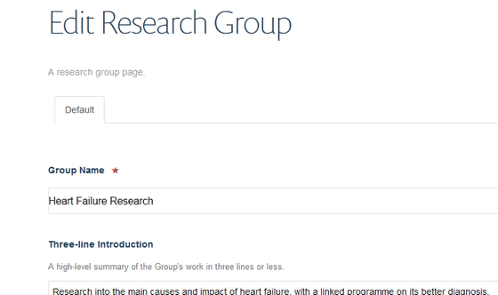

Shows you how to change the contact details on a research group page. You need to log in first. If you are unsure how to do this go to Log in to your site with single sign on guide in the Getting Started section.
Go to the Research section of your website and find the Research Group page you would like to edit.
Click on Edit on the tool bar at the top of the page to bring up the editing interface:
Scroll down the page until you see the the Phone, Fax and Email boxes. Make and save your changes. The Save button is at the bottom of the page.